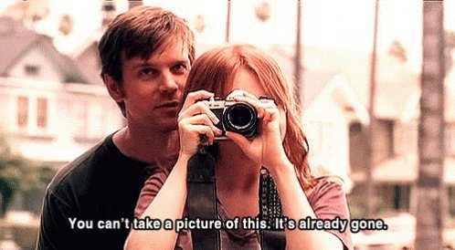

Arda Enes DEMİRHAN
Hakkımda
Merhaba, Ben Arda Enes DEMİRHAN !
Ankara'da yaşıyorum. Dizi/film izlemeyi, müzik dinlemeyi, yürüyüş yapmayı ve denizi seyretmeyi çok seviyorum (tabii Ankara'da olduğum için bunu uzun zamandır yapamıyorum..)
İlgi Alanlarım
- Film
- Interstellar
- Batman Begins
- The Dark Knight
- The Dark Knight Rises
- Inception
- Prestige
- Tenet
- Dizi
- Prison Break
- Breaking Bad
- Friends
- Fringe
- The Perception
- Six Feet Under
- The Blacklist/li>
- Kitap
- Martin Eden - Jack London
- Ademden Önce - Jack London
- Öteki - Dostoyevski
- Suç ve Ceza - Dostoyevski
- İnsan Ne İle Yaşar - Tolstoy
Yazılıma, Web geliştirmeye oldukça ilgiliyim. Kendim her ne kadar tek başıma çalışsam da yoğunluk sebebiyle düzenli çalışamıyordum, kodluyoruz benim için itici bir güç oldu..
Six Feet Under'dan beni etkileyen bir sahne.
